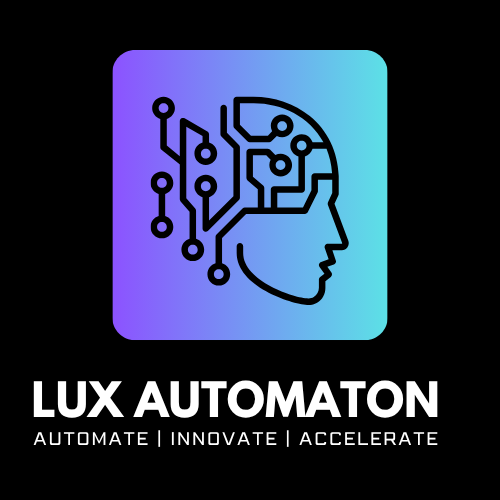
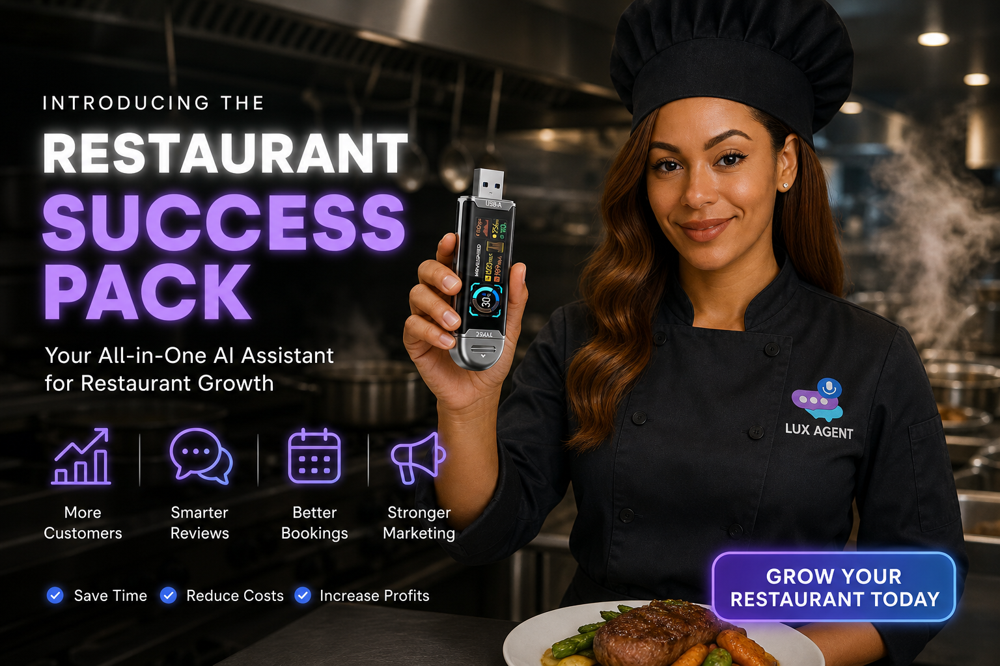

Lux Automaton | Private AI Systems Company
Build the AI operating system your business actually owns.
Lux Automaton builds premium AI products, customer-ready operating systems, and automation workflows for founders, service businesses, teams, and builders who want speed without losing control.

Lux CommandLive company system preview
LeadSystemAutomateScale
Choose Your Path
Every visitor should know where to go in ten seconds.
Operating System View
Lux Automaton as one connected company.
This mock shows the customer how the brand, products, service systems, and AI tools connect instead of feeling like separate links.
Lux Automaton
Automate | Innovate | Accelerate

Premium Experience
Make the company feel like a working AI command center.
The main website should sell trust immediately: polished product visuals, clear system pathways, animated metrics, real solution stories, and LANA always available to guide customers.
Products
Give every product a clearer lane.
Solutions
Show the real-world systems Lux builds.
 Lux Care OS
Lux Care OS
Care operations, staff workflows, follow-up, SOPs, and daily operating structure.
 Epic Electric
Epic Electric
Contractor CRM, quotes, job tracking, review requests, and local marketing.
 Inland Circle Program OS
Inland Circle Program OS
Community program operations, outreach, resource tracking, and reporting support.
Founder Story
Keep Asa and the build-from-scratch story central.
This concept gives the founder story more weight: Lux Automaton is presented as an original product company and custom AI systems studio, built from real operating needs instead of a generic template.
Start a company system conversation
News + Proof
Use content to prove the company is alive.
 Success Packs
Pack launches become news stories.
Success Packs
Pack launches become news stories.

Customer Use Industry examples show why the system matters. Founder Build Log
Show the original thinking behind the products.
Founder Build Log
Show the original thinking behind the products.
Mock direction: premium company ecosystem site.
This design keeps the current strong dark Lux feel, but makes the company website more organized around products, solutions, proof, and customer action.